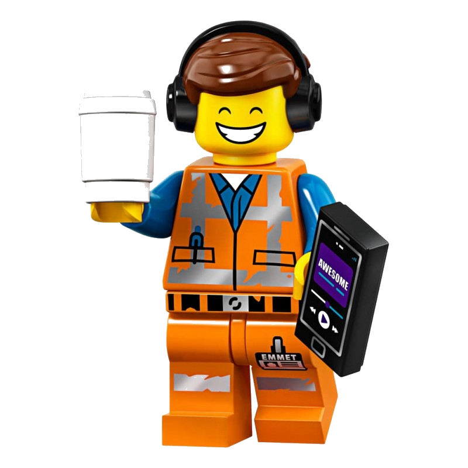

| Layer | Role | What it does |
|---|---|---|
| Bricks | One question, one answer | Compute OEE, rank alarms, find anomalies |
| Assemblies | Combine bricks into structured analyses | Find alarm families, score priorities, estimate gains |
| Diagnosis | Full pipeline, one pass | Produce a report with prioritised findings |
Episode 7 — Behind the scenes
Everything in this book was built with the same set of tools.
Six episodes. OEE, alarm rankings, sequences, anomalies, alarm families, escalation paths, costs.
All of it was built with a consistent set of R tools — designed to work on any machine log, not just this one.
The LEGO principle

I think in LEGO. Each brick does one thing. The bricks snap together. And from the same box, you can build very different things depending on the question.
That’s how these tools are designed. One brick computes an OEE. Another ranks alarms. Another finds alarm families. The six episodes are six different assemblies from the same box of bricks.
A language for machine logs
Every question we asked follows the same structure:
- What are we measuring? (OEE, alarm duration, similarity…)
- Where? (one machine, all machines, one alarm family…)
- Over what period? (full dataset, last month, before/after a date…)
- Compared to what? (a target, another machine, the machine’s own history…)
That structure is a grammar — a systematic way of asking machines the same questions, regardless of which machine, which plant, which industry. The dataset here is food packaging. The method applies the same to pharma, automotive, electronics — any process where machines produce interval logs.
Three layers
You’ve only seen half
The six episodes explored the dataset step by step. The tools behind them now go further. Here are a few examples.
The funnel. 132 alarm codes in the log. The diagnosis layer filters automatically — Pareto, then exclusion of low-impact alarms. On this dataset: 132 → 11 → 4 alarms that concentrate the investigation. Not a catalogue. A shortlist.
Period comparison. The tools can compare two time windows and produce conclusions in plain language:
Not charts. Not numbers. Sentences — written for someone who needs to decide what to do next.
Prediction. On some machines, the accumulation of downtime in the last 30 minutes predicts a long stop better than any individual alarm code. The tools can learn these patterns. On others, the log alone isn’t enough — which is also a result.
No AI inside
To be clear: none of this relies on artificial intelligence. The methods are established, documented, and interpretable — no neural network, no black box. Statistics and domain knowledge, formalised into modular tools that snap together.
That said, a natural extension exists: a local language model that translates plain-language questions into the right analysis call. I built and tested the concept — it works. A question goes in — in whatever language — the right analysis comes out. The logic is language-agnostic. And everything stays local — even offline.
But it’s an option, not a dependency. The grammar works without it.
Still growing
These tools are still actively developed and tested on real data. They work — but they’re not finished. The toolbox grows with every new question.
When machines talk
This started as an exercise on a public dataset. It ended with something I didn’t plan: a language.
Not a programming language — a communication language. A way to listen to what machines say through their logs. To translate their alarms, their patterns, their silences into questions and answers.
The log isn’t just a record of what happened. It’s raw material for decisions — adjust a parameter, schedule an intervention, change a procedure.
That’s what this book is about. Listening.